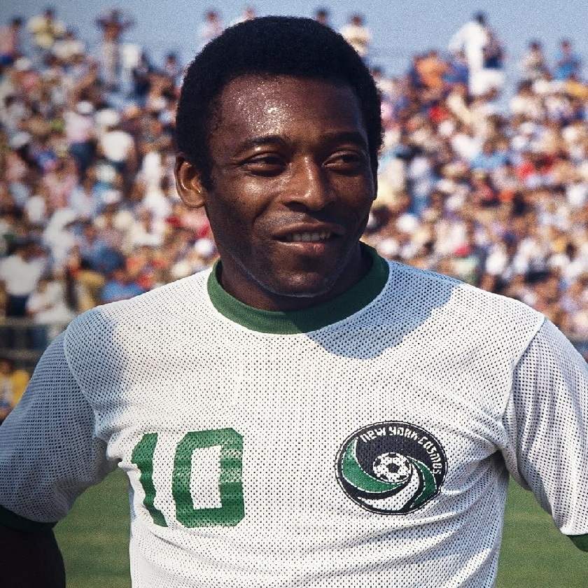
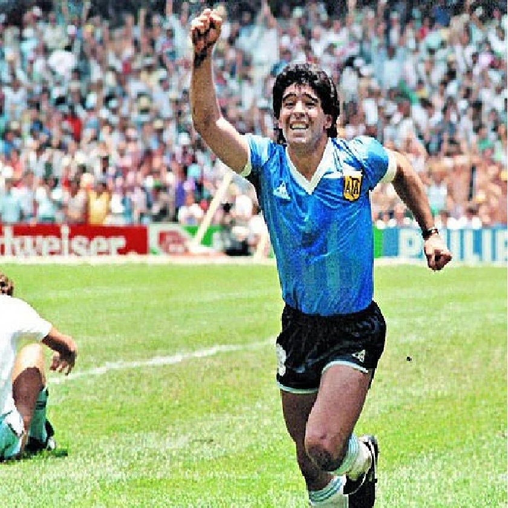
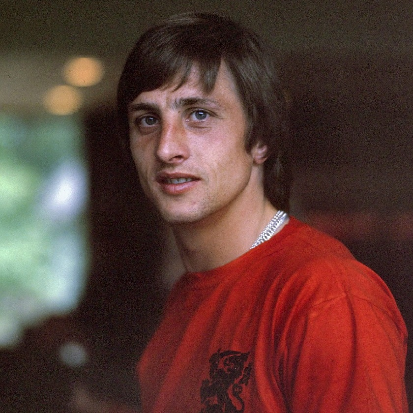

Mejores Jugadores Históricos
Esta sección está dedicada a los jugadores que han dejado una huella imborrable en la historia del fútbol. Aquí encontrarás información sobre sus carreras, logros, y el impacto que tuvieron en sus equipos y el deporte en general.
Pelé
Considerado uno de los mejores jugadores de todos los tiempos, Pelé ganó tres Copas del Mundo con Brasil (1958, 1962, 1970). Es famoso por su capacidad de anotar goles, su habilidad técnica y su influencia en el desarrollo global del fútbol.
Diego Maradona
Icono argentino, Maradona es conocido por su extraordinaria habilidad con el balón y su famoso gol "La Mano de Dios" en el Mundial de 1986. Llevó a Argentina al título mundial y tuvo una carrera legendaria en clubes como el Nápoles.
Zinedine Zidane
Excepcional mediocampista francés, Zidane fue clave en la victoria de Francia en la Copa del Mundo de 1998. También ganó la Champions League con el Real Madrid y es recordado por su visión, técnica y elegancia en el campo.

Lionel Messi
Considerado uno de los mejores jugadores de la historia moderna, Messi ha ganado múltiples Balones de Oro y ha roto numerosos récords con el FC Barcelona y la selección argentina. Su habilidad para driblar y marcar goles es legendaria.

Cristiano Ronaldo
Conocido por su increíble físico, velocidad y habilidad para anotar, Cristiano Ronaldo ha sido un jugador clave para el Manchester United, Real Madrid, Juventus y la selección de Portugal. Ha ganado múltiples títulos de liga y Champions League.

Johan Cruyff
Johan Cruyff fue un futbolista y entrenador neerlandés que es ampliamente considerado como uno de los más influyentes en la historia del fútbol. Nació el 25 de abril de 1947 en Ámsterdam, Países Bajos, y comenzó su carrera profesional en el Ajax.
© 2024 Andre - Clase de Desarrollo Web